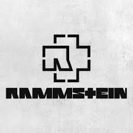

Moje projekty



🎸 Kytarista, 🚒 hasič, 👨💻 student.
🎸 Jsem kytarista a hraju v rockové kapele s názvem Arytmitus.
🚒 Aktivně se věnuji jak hasičskému sportu, tak zásahovým hasičům.
🎓 Studuji Obchodní akademii v Opavě, obor Informační technologie.
🏠 Bydlím ve vesnici jménem Strahovice v okrese Opava.
📅 Je mi 17 let.
Pokud se se mnou chceš spojit nebo jen bys chtěl se podívat na mé další projekty
⬇️GitHub: github.com/LukasKrajicek
Telefon: +420 703315881
Email: anonymous.anonym@seznam.cz